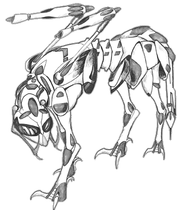

Mecha design and illustration by AMY BORDEN (borden@alexia.lis.uiuc.edu).

Although most of the original Hellcats were destroyed when the Invid Regent was defeated at the end of the First Invid War, the original concept of the inorganic impressed some of the Stage 6 Invid on Earth. Several leader Invid tried to improve on the design themselves, since an independent mecha design that could track resistance fighters back to their bases was an ideal weapon to use against human rebels that hid in the many ruined cities and bases of Earth. They initially started with an in-depth study of fast open-land Earth mammals such as cheetahs, antelopes, and pronghorns, which led to radical redesigns of the old Hellcat design, especially in the feet and head area. The resulting inorganic is a synthesis of the best observed traits of both Earth and Praxian predatory mammals.
The feet of the Hellcat Mark II are specially designed to provide the robot with superb speed, traction, and shock absorption characteristics. The basic foot is a cloven hoof surrounded by four hook-shaped claws (two front, two back) for gripping and breaking. When not in use the claws retract upward into the feet so that they do not interfere with running or climbing, but when needed for extra traction or gripping they can be instantly deployed. All of the claws have built-in vibro blades which allow them to slice through steel and high-tech alloys.
The head of the Hellcat has also been extensively redesigned. The most notable facial feature of the new inorganic is the large black eyes that curve around the head almost to the neck. The eyes provide both excellent stereoscopic vision for precision tracking and aiming, as well as near-360-degree vision making it extremely difficult to sneak up and surprise the Hellcat. The eyes of the Hellcat can see both the infrared and ultraviolet spectrum, allowing it to see heat emissions and colors outside of normal human vision. In addition its eyes, the Hellcat also has multiple sensors that provide it with highly detailed senses of hearing and smell. Finally, the Hellcat has an echo-location system which allows it to use sound waves to determine its surroundings, similar to sonar. With this system the Hellcat can see in total blackness, sense movement, and even locate hidden doors and passages.
The Hellcat Mk. II design does not have the mouth or fangs of the older Hellcat. Instead, the head of the mecha is equipped with two vibro-blade tusks that are constructed out of super-hard materials. In addition, the Hellcat 2 has two blaster cannons mounted on extendible arms providing it with a long-distance attack. The arms the cannon are mounted on can pivot and rotate in any direction, allowing the Hellcat to fire to either side or directly behind itself. When not in use these cannons are folded away in compartment on either side of the torso, near the shoulder blades. The Hellcat's advanced sensors combined with the cannons wide range of motion makes the inorganic deadly accurate in a firefight.
The overall structure of the Hellcat 2 gives it a very thin, almost emancipated appearance, somewhat resembling a skeleton of one of the great predatory cats of Africa. The large black eyes, tusks, and claws give the inorganic a devastating psychological impression, and resistance fighters who have survived being stalked by these creatures report having nightmares about them even months after their encounter. The new Hellcats are usually released in packs of 5 initially into the countryside, although they may split up and operate solo, or combine with other Hellcat groups to form larger packs during their travels. The Hellcat Mk. II was initially developed and released in central Africa, though it quickly spread to the jungles of Asia and South America, as well as the forests and plains of North America. Designed to operate independently for years, the Hellcats continued to plague resistance fighters throughout the latter half of the Third Invid War, and even for decades after the war ended. The last known Hellcat Mk. II was hunted down and destroyed in 2049 in the Rocky Mountains of North America, but it is unknown if more are lurking in the wastelands and jungles of post-Invid Earth.
M.D.C. BY LOCATION
[1] Head 60
Legs (4) 45 each
Blaster Arms (2) 25 each
Tail 30
[2] Main Body 120
NOTES:


 |
http://www.mcs.net/~deitrich/index.html deitrich@mcs.net |
Last Updated: |